Relatório de Bugs
Mantenedores: Gustavo Henrique, Kauan Cardoso, Sophya Ribeiro, Brenno, Catarina, Eduardo
Histórico de Alterações
| Versão | Data | Justificativa | Responsável |
|---|---|---|---|
| 1.0 | 23/03/2026 | Criação e estruturação do documento. | Pedro Silva Soledade |
| 1.1 | 23/04/2026 | Adição retroativa dos bugs 1 ao 5. | Pedro Silva Soledade |
| 1.2 | 24/04/2026 | Melhoria dos relatos dos bugs 1 ao 5. | Pedro Silva Soledade |
| 1.3 | 24/09/2026 | Migração do documento (Google Docs) para o MkDocs; renumeração dos IDs duplicados e remoção de um registro repetido e de um registro de modelo não preenchido. | Sophya Ribeiro |
Sumário¶
- 1. Introdução
- 2. Criticidade e Severidade
- 3. Relato de Bugs
- 3.1 Front-end (18)
- 3.2 Back-end (8)
- 3.3 End-to-End (1)
- 4. Como registrar um novo bug
1. Introdução¶
Este documento tem como objetivo registrar, acompanhar e gerenciar os defeitos (bugs) identificados durante a execução dos testes do sistema NotificaSaúde. Os registros aqui descritos permitem o controle do ciclo de vida dos defeitos, desde sua identificação até sua correção e validação.
1.1 Visão geral do documento¶
O documento está organizado em uma seção principal com os relatos dos bugs identificados durante os testes, incluindo descrição, severidade, status e rastreabilidade com os testes executados.
| Seção | Conteúdo |
|---|---|
| 2. Criticidade e Severidade | Definição dos níveis de criticidade e severidade adotados, usados para classificar o impacto e a prioridade dos defeitos encontrados. |
| 3. Relato de Bugs | Defeitos identificados durante a execução dos testes, com as informações necessárias para sua reprodução, análise e acompanhamento. |
2. Criticidade e Severidade¶
Esta seção define os critérios adotados para classificar os defeitos identificados durante a execução dos testes do sistema NotificaSaúde. A categorização orienta a priorização das correções, considerando o impacto funcional, técnico e na experiência do usuário.
Foi adotado um modelo simplificado com três níveis de classificação (Alta, Média e Baixa), o que dá mais agilidade à análise e à tomada de decisão.
-
Alta
Defeitos que impactam diretamente funcionalidades críticas do sistema ou impedem sua utilização.
Critérios
- Bloqueio de fluxos principais (ex.: criação de notificação, carregamento de formulários);
- Erros críticos (ex.: falha 500, quebra da aplicação);
- Perda, inconsistência ou invalidação de dados;
- Falhas que impedem a execução de testes ou pipelines (CI/CD);
- Ausência de workaround viável.
Ação esperada
Correção imediata com alta prioridade.
-
Média
Defeitos que afetam funcionalidades importantes, mas não impedem totalmente o uso do sistema.
Critérios
- Comportamento incorreto em funcionalidades relevantes;
- Impacto parcial na regra de negócio;
- Problemas técnicos que afetam desenvolvimento/testes, mas com possível contorno ou existência de workaround.
Ação esperada
Correção planejada em curto prazo.
-
Baixa
Defeitos com baixo impacto funcional, geralmente relacionados à interface ou a melhorias.
Critérios
- Problemas visuais (UI/UX);
- Inconsistências menores de comportamento;
- Melhorias ou ajustes não críticos;
- Não impactam fluxos principais.
Ação esperada
Correção opcional, podendo ser priorizada conforme o planejamento.
3. Relato de Bugs¶
Defeitos identificados durante a execução dos testes, agrupados pela camada em que ocorreram. A tabela de cada seção resume os registros; clique no ID ou abra o bloco correspondente para ver o relato completo (passos para reprodução, resultados, observações e evidências).
3.1 Front-end¶
| ID | Issue | Título | Severidade | Status | Responsáveis |
|---|---|---|---|---|---|
| BUG-FRONT-001 | #15 | No processo de realizar notificação não é exibido campo de texto para inserir opção "outro" | Alta | Fechado | Lucas Gonçalves → Luigi Almeida |
| BUG-FRONT-002 | #19 | Validação incorreta do campo “Especificação (Outro)” em exibição dinâmica | Alta | Fechado | Pedro Soledade → Luigi Almeida |
| BUG-FRONT-003 | #33 | Adicionar data-testid no wrapper do campo de seleção de instituição | Média | Fechado | Fábio Ramos → Fábio Ramos |
| BUG-FRONT-004 | #53 | Descrições de notificação muito grandes não são exibidas adequadamente na tela | Média | Fechado | Lucas Gonçalves → Luigi Almeida |
| BUG-FRONT-005 | #36 | Ajuste de detalhes de UI/UX após testes exploratórios | Média | Fechado | Luigi Almeida → Luigi Almeida |
| BUG-FRONT-006 | #43 | Não deveria ser possível editar status na tela de detalhes de notificação | Média | Fechado | Lucas Gonçalves → Luigi Almeida |
| BUG-FRONT-007 | #44 | Data do incidente é exibida incorretamente nos detalhes de notificação | Média | Fechado | Lucas Gonçalves → Luigi Almeida |
| BUG-FRONT-008 | #45 | Em telas pequenas não é possível visualizar o histórico de alterações | Média | Fechado | Lucas Gonçalves → Luigi Almeida |
| BUG-FRONT-009 | #46 | Em telas pequenas não é possível visualizar o botão para continuar a classificação | Média | Fechado | Lucas Gonçalves → Luigi Almeida |
| BUG-FRONT-010 | #47 | Em telas pequenas os modal de editar notificação e classificar incidente são sobrepostos pela sidebar | Média | Fechado | Lucas Gonçalves → Luigi Almeida |
| BUG-FRONT-011 | #48 | No componente de edição de campo quando está selecionado a opção de "Outro" não é exibido opção de inserir valor personalizado | Média | Fechado | Lucas Gonçalves → Luigi Almeida |
| BUG-FRONT-012 | #49 | Opção de "Outro" não exibe o valor personalizado na página de detalhes da notificação | Média | Fechado | Lucas Gonçalves → Luigi Almeida |
| BUG-FRONT-013 | #50 | Opções "Outro" exibir o valor personalizado que foi preenchido, por exemplo, "Outro - OTR" | Média | Fechado | Lucas Gonçalves → Luigi Almeida |
| BUG-FRONT-014 | #51 | É possível inserir mais caracteres que o limite estabelecido para o campo de observação | Média | Fechado | Lucas Gonçalves → Luigi Almeida |
| BUG-FRONT-015 | #52 | Na busca quando selecionado "Evento Adverso" não é possível de nenhuma forma selecionar o grau de dano | Média | Fechado | Lucas Gonçalves → Luigi Almeida |
| BUG-FRONT-016 | #57 | Campo "Especifique" não é validado ao selecionar "Outro" no setor da notificação de incidente | Média | Fechado | Pedro Silva Soledade → Luigi Almeida |
| BUG-FRONT-017 | #58 | Filtro "Never Event" não retorna notificações classificadas no grau de dano em Evento Adverso | Média | Fechado | Pedro Silva Soledade → Luigi Almeida |
| BUG-FRONT-018 | #59 | Botão "Salvar" finaliza classificação de notificação indevidamente | Média | Fechado | Pedro Silva Soledade → Luigi Almeida |
BUG-FRONT-001 · #15 · No processo de realizar notificação não é exibido campo de texto para inserir opção "outro"
Justificativa da severidade: Bloqueia funcionalidade principal (criação de notificação).
Resumo
Durante o processo de criação de uma notificação, ao selecionar a opção “Outro” em campos de seleção, o sistema não exibe o campo de entrada textual para especificação. Isso impede a finalização da notificação, pois o backend não aceita o valor vazio.
Passos para reprodução
- Acessar o fluxo de criação de notificação.
- Preencher os campos do formulário.
- Em qualquer campo de seleção, escolher a opção “Outro”.
- Observar que o campo de texto para especificação não é exibido.
- Tentar enviar a notificação.
- Verificar erro retornado pelo backend devido ao campo obrigatório não preenchido.
Resultado esperado
- Ao selecionar a opção “Outro”, deve ser exibido um campo de entrada textual;
- O campo deve ser obrigatório;
- O usuário só deve conseguir avançar/enviar a notificação após preencher esse campo;
Resultado obtido
- Impedimento da finalização da notificação, pois o backend não aceita o valor vazio.
Observações
- O problema impede a conclusão do fluxo de notificação.
- Indica falha na renderização condicional de campos dinâmicos no frontend.
- Pode estar relacionado à mesma lógica da issue #19 (validação e comportamento do “Outro”).
- Backend está corretamente validando e rejeitando valores vazios, mas o frontend não está tratando o caso.
Evidência
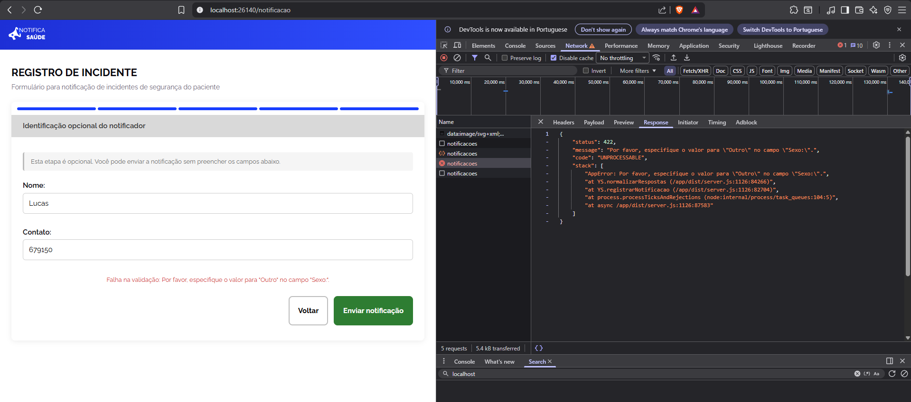
curl 'http://localhost:26141/api/notificacoes' \
-H 'Accept: */*' \
-H 'Accept-Language: pt-BR,pt;q=0.5' \
-H 'Cache-Control: no-cache' \
-H 'Connection: keep-alive' \
-H 'Content-Type: application/json' \
-H 'Origin: http://localhost:26140' \
-H 'Pragma: no-cache' \
-H 'Referer: http://localhost:26140/' \
-H 'Sec-Fetch-Dest: empty' \
-H 'Sec-Fetch-Mode: cors' \
-H 'Sec-Fetch-Site: same-site' \
-H 'Sec-GPC: 1' \
-H 'User-Agent: Mozilla/5.0 (Windows NT 10.0; Win64; x64) AppleWebKit/537.36 (KHTML, like Gecko) Chrome/147.0.0.0 Safari/537.36' \
-H 'sec-ch-ua: "Brave";v="147", "Not.A/Brand";v="8", "Chromium";v="147"' \
-H 'sec-ch-ua-mobile: ?0' \
-H 'sec-ch-ua-platform: "Windows"' \
--data-raw '{"anonima":false,"unidade_id":"3a7f2d42-528d-45d5-8c2e-6c2cd4131e3a","setor_id":"21d6da61-1b39-4c4c-b244-6e554f106423","data_incidente":"2026-04-15T00:00:00.000Z","respostas":[{"campo_id":"55555555-5555-4555-b555-000000000010","valor_opcao_id":"3a7f2d42-528d-45d5-8c2e-6c2cd4131e3a"},{"campo_id":"55555555-5555-4555-b555-000000000000","valor_opcao_id":"accdd0e6-fefb-42cf-88da-d3dd29045d5c"},{"campo_id":"55555555-5555-4555-b555-000000000001","valor_opcao_id":"d71ccbe2-e8f5-40ff-beee-912ddad27799"},{"campo_id":"55555555-5555-4555-b555-000000000002","valor_opcao_id":"9716598f-2b06-4b51-ade3-dff390eb6a2b"},{"campo_id":"55555555-5555-4555-b555-000000000008","valor":"2026-04-15"},{"campo_id":"55555555-5555-4555-b555-000000000009","valor_opcao_id":"6ec2195d-ed29-4450-822b-8519434dd9d9"},{"campo_id":"55555555-5555-4555-b555-000000000003","valor_opcao_id":"21d6da61-1b39-4c4c-b244-6e554f106423"},{"campo_id":"55555555-5555-4555-b555-000000000004","valor":"rstrstrst"},{"campo_id":"55555555-5555-4555-b555-000000000005","valor_opcao_id":"083acc56-49be-4ef8-8e13-eb83ea2f8199"},{"campo_id":"55555555-5555-4555-b555-000000000006","valor":"Lucas"},{"campo_id":"55555555-5555-4555-b555-000000000007","valor":"679150"}]}'
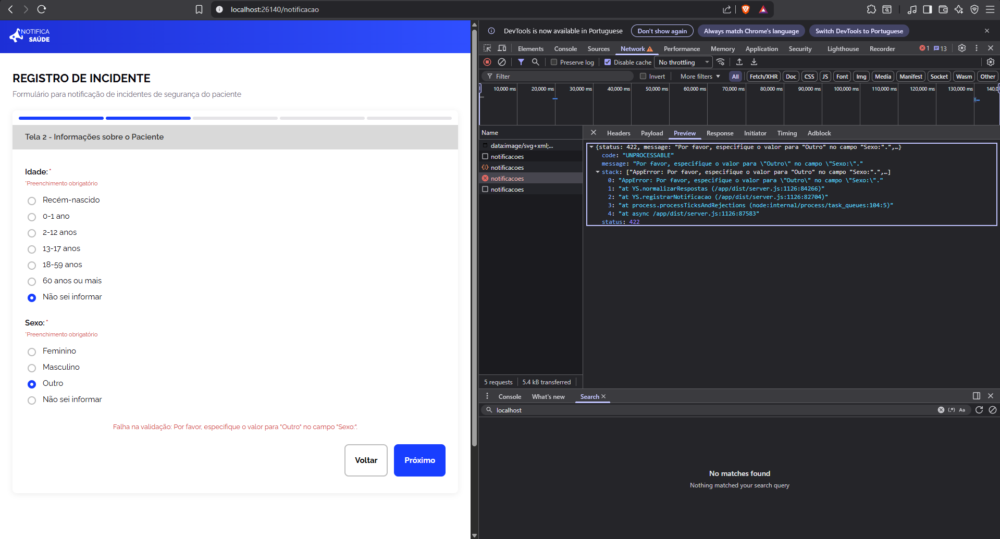
BUG-FRONT-002 · #19 · Validação incorreta do campo “Especificação (Outro)” em exibição dinâmica
Justificativa da severidade: Afeta diretamente a integridade dos dados e a regra de negócio do sistema.
Resumo
Validação incorreta do campo “Especificação (Outro)” em formulários com exibição dinâmica. O sistema permite avançar no fluxo mesmo quando o campo obrigatório não é preenchido após selecionar a opção “Outro”.
Passos para reprodução
- Acessar as telas que possuem exibição dinâmica de campos (Tela 2 ou Tela 3).
- Selecionar a opção “Outro” em um campo de seleção.
- Observar a exibição do campo adicional de especificação.
- Tentar avançar no fluxo sem preencher o campo de especificação.
Resultado esperado
Ao selecionar a opção “Outro”:
- O campo de especificação deve ser obrigatório;
- O sistema deve impedir o avanço caso o campo esteja vazio;
- Deve ser exibida uma mensagem de erro clara informando a obrigatoriedade do preenchimento.
Resultado obtido
- O sistema permite avançar no fluxo mesmo com o campo de especificação vazio, sem exibir mensagem de erro.
Observações
- O problema ocorre em múltiplas telas (Tela 2 e Tela 3), indicando possível falha na lógica compartilhada de validação.
- Estar relacionado à validação condicional não aplicada corretamente no frontend.
- Risco de persistência de dados incompletos ou inconsistentes.
Evidência
Não informado.
BUG-FRONT-003 · #33 · Adicionar data-testid no wrapper do campo de seleção de instituição
Resumo
O campo "Em qual instituição de saúde ocorreu o incidente?" não possui data-testid no elemento wrapper. Apenas os \<input> individuais possuem testids no formato field-55555555-5555-4555-b555-000000000010-option-{uuid}.
O page object NotificacaoPage dos testes E2E usa getByTestId('field-55555555-5555-4555-b555-000000000010') para localizar o grupo de campos, o que falha pois nenhum elemento wrapper possui esse atributo. Isso causa timeout em 31 testes (CT-FUN-001, CT-FUN-002, CT-NF-003, CT-NF-004) nos três browsers.
Passos para reprodução
Não informado.
Resultado esperado
- Elemento wrapper do grupo de radio buttons da instituição possui data-testid="field-55555555-5555-4555-b555-000000000010"
- Locator getByTestId('field-55555555-5555-4555-b555-000000000010').getByRole('radio').first() encontra o primeiro radio button
- Testes E2E CT-FUN-001 e CT-FUN-002 (Tela 1) passam sem timeout nos três browsers
Observações
- Repositório E2E: Notifica-Saude/notifica-saude-e2e
- Page object afetado: page-objects/NotificacaoPage.ts — locator selectInstituicao
- Testids já existentes nos inputs: field-55555555-5555-4555-b555-000000000010-option-{uuid}
Evidência
Não informado.
BUG-FRONT-004 · #53 · Descrições de notificação muito grandes não são exibidas adequadamente na tela
Resumo
Não informado.
Passos para reprodução
Não informado.
Resultado esperado
- Quando a descrição do incidente é muito grande ela some da tela ficando em apenas uma linha
Observações
Não informado.
Evidência
Não informado.
BUG-FRONT-005 · #36 · Ajuste de detalhes de UI/UX após testes exploratórios
Resumo
- O campo "Contato" não deixava claro para o usuário quais informações poderiam ser inseridas (email ou telefone), gerando incerteza e possíveis erros de preenchimento.
- Ao avançar para a próxima etapa do formulário, a tela não reposicionava o usuário no início do novo step, prejudicando a continuidade da experiência e podendo causar confusão.
Passos para reprodução
Não informado.
Resultado esperado
- Adicionar um placeholder explicativo no campo "Contato" com o formato: Celular: ( ) _- ou email: email@gmail.com, tornando explícitas as opções de preenchimento.
- Implementar comportamento de scroll automático ao clicar no botão "Próximo", garantindo que o usuário seja levado ao topo da próxima etapa:
- Scroll suave (smooth scroll)
- Foco no início do conteúdo (primeiro campo do step)
Observações
Não informado.
Evidência
Não informado.
BUG-FRONT-006 · #43 · Não deveria ser possível editar status na tela de detalhes de notificação
Resumo
- Foi conversado que o status não seria editável manualmente e que seria alterado de acordo com o fluxo da notificação, portanto não deveria ser possível alterar o elemento de status, apenas ser exibido o status atual
Passos para reprodução
Não informado.
Resultado esperado
Não informado.
Observações
Não informado.
Evidência
Não informado.
BUG-FRONT-007 · #44 · Data do incidente é exibida incorretamente nos detalhes de notificação
Resumo
- A data exibida do ocorrido/incidente está exibindo a Data - 1 dia, exemplo: 08/05/2026 é exibido incorretamente como 07/05/2026
Passos para reprodução
Não informado.
Resultado esperado
Não informado.
Observações
Não informado.
Evidência
Não informado.
BUG-FRONT-008 · #45 · Em telas pequenas não é possível visualizar o histórico de alterações
Resumo
- Em telas pequenas não é possível visualizar o histórico de alterações na tela de detalhes da notificação
Passos para reprodução
Não informado.
Resultado esperado
Não informado.
Observações
Não informado.
Evidência
Não informado.
BUG-FRONT-009 · #46 · Em telas pequenas não é possível visualizar o botão para continuar a classificação
Resumo
- Em telas pequenas não é possível visualizar o botão para continuar a classificação
Passos para reprodução
Não informado.
Resultado esperado
Não informado.
Observações
Não informado.
Evidência
Não informado.
BUG-FRONT-010 · #47 · Em telas pequenas os modal de editar notificação e classificar incidente são sobrepostos pela sidebar
Resumo
- Em telas pequenas os modal de editar notificação e classificar incidente são sobrepostos pela sidebar
Passos para reprodução
Não informado.
Resultado esperado
Não informado.
Observações
Não informado.
Evidência
Não informado.
BUG-FRONT-011 · #48 · No componente de edição de campo quando está selecionado a opção de "Outro" não é exibido opção de inserir valor personalizado
Resumo
- No componente de edição ao selecionar a opção "Outro" (ou quando já vier previamente selecionada) não é possível visualizar ou alterar o valor personalizado
Passos para reprodução
Não informado.
Resultado esperado
Em um componente de edição ao selecionar a opção "Outro" (ou quando já vier previamente selecionada) deve ser possível alterar o valor personalizado
Observações
Não informado.
Evidência
Não informado.
BUG-FRONT-012 · #49 · Opção de "Outro" não exibe o valor personalizado na página de detalhes da notificação
Resumo
- Opções "Outro" exibir o valor personalizado que foi preenchido, por exemplo, "Outro - OTR"
Passos para reprodução
Não informado.
Resultado esperado
Opções "Outro" não é exibido o valor personalizado que foi preenchido, por exemplo, "Outro"
Observações
Não informado.
Evidência
Não informado.
BUG-FRONT-013 · #50 · Opções "Outro" exibir o valor personalizado que foi preenchido, por exemplo, "Outro - OTR"
Resumo
- Opções "Outro" exibir o valor personalizado que foi preenchido, por exemplo, "Outro - OTR"
Passos para reprodução
Não informado.
Resultado esperado
Opções "Outro" não é exibido o valor personalizado que foi preenchido, por exemplo, "Outro"
Observações
Não informado.
Evidência
Não informado.
BUG-FRONT-014 · #51 · É possível inserir mais caracteres que o limite estabelecido para o campo de observação
Resumo
- Não ser possível inserir mais de 400 caracteres no campo de observação, ser informado do limite de caracteres
Passos para reprodução
Não informado.
Resultado esperado
É possível inserir mais de 400 caracteres no campo de observação, a interface mantém o botão habilitado que permite enviar a requisição que responde com erro por conta da limitação de caracteres estabelecida. Também não é exibido nenhuma mensagem a respeito do limite de caracteres
DOC_Requisitos: US 2.3 - CA 3.6
Observações
Não informado.
Evidência
Não informado.
BUG-FRONT-015 · #52 · Na busca quando selecionado "Evento Adverso" não é possível de nenhuma forma selecionar o grau de dano
Resumo
- Quando selecionado "Evento Adverso" ser possível selecionar também o grau de dano (por padrão vir selecionado "Todos graus de dano")
Passos para reprodução
Não informado.
Resultado esperado
Quando selecionado "Evento Adverso" não é possível de nenhuma forma selecionar o grau de dano
Observações
Não informado.
Evidência
Não informado.
BUG-FRONT-016 · #57 · Campo "Especifique" não é validado ao selecionar "Outro" no setor da notificação de incidente
Resumo
- No formulário de notificação de incidente, ao selecionar a opção "Outro" no campo de setor, o campo "Especifique" é exibido como obrigatório, porém o sistema permite avançar sem preenchê-lo.
Passos para reprodução
- Acessar o formulário de notificação de incidente.
- Preencher campos anteriores corretamente
- No campo Setor, selecionar a opção "Outro".
- Verificar que o campo "Especifique" é exibido como obrigatório.
- Tentar avançar sem preencher o campo "Especifique".
Resultado esperado
O sistema deve impedir o avanço do formulário enquanto o campo "Especifique" não for preenchido quando a opção "Outro" estiver selecionada.
Observações
- O comportamento indica ausência ou falha na validação obrigatória do campo condicionado à opção "Outro".
Evidência
- Campo "Especifique" aparece como obrigatório visualmente, mas sem bloqueio de avanço ao permanecer vazio.
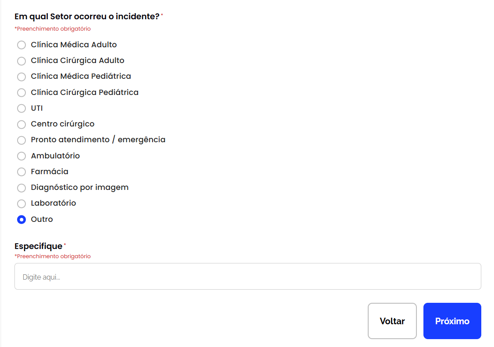
BUG-FRONT-017 · #58 · Filtro "Never Event" não retorna notificações classificadas no grau de dano em Evento Adverso
Resumo
- Ao utilizar o filtro Evento Adverso e selecionar o grau de dano "Never Event", as notificações classificadas com esse grau não são exibidas na listagem.
Passos para reprodução
- Acessar a tela de listagem de notificações.
- Selecionar o filtro Evento Adverso.
- No filtro de Grau de dano, selecionar a opção "Never Event".
- Aplicar o filtro e observar os resultados retornados.
Resultado esperado
O sistema deve impedir o avanço do formulário enquanto o campo "Especifique" não for preenchido quando a opção "Outro" estiver selecionada.
Observações
- O problema pode estar relacionado ao mapeamento do valor do filtro ou à consulta utilizada na busca.
- Validar se o valor salvo no banco corresponde exatamente ao valor enviado pelo filtro.
Evidência
- Ao aplicar o filtro "Never Event", a listagem retorna vazia mesmo existindo notificações cadastradas com essa classificação.
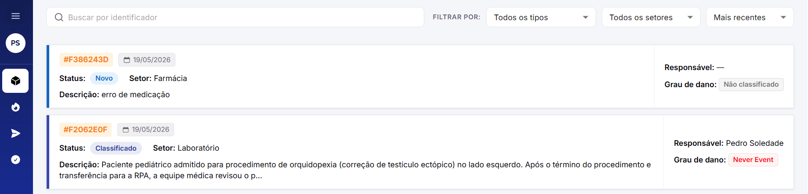
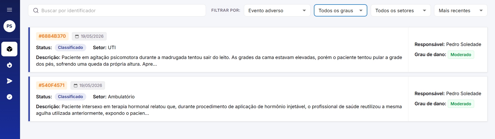
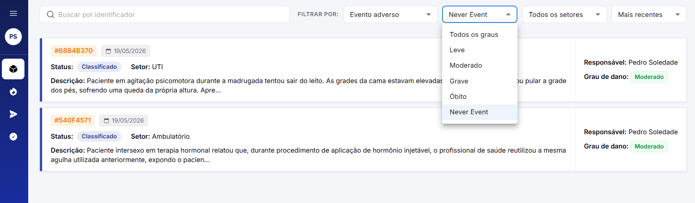
BUG-FRONT-018 · #59 · Botão "Salvar" finaliza classificação de notificação indevidamente
Resumo
- Ao classificar uma notificação recebida, ao preencher os campos e clicar em "Salvar rascunho" em vez de "Finalizar", a notificação é finalizada indevidamente. O mesmo comportamento ocorre quando apenas os campos selecionáveis são preenchidos e a descrição permanece vazia.
Passos para reprodução
- Acessar uma notificação recebida para classificação.
- Preencher todos os campos selecionáveis da classificação.
- Escrever uma descrição
- Clicar no botão "Salvar rascunho".
- Observar o status da notificação após a ação.
Cenário adicional¶
- Preencher apenas os campos selecionáveis da classificação.
- Deixar o campo de descrição vazio.
- Clicar em "Salvar rascunho".
- Observar que a notificação também é finalizada.
Cenário adicional (erro 404)¶
- Preencher apenas alguns dos campos selecionáveis da classificação.
- Escrever uma descrição
- Clicar em "Salvar rascunho".
- Observar que a notificação também é finalizada.
Resultado esperado
- O botão "Salvar rascunho" deve apenas salvar o progresso da classificação sem finalizar a notificação.
- A notificação só deve ser finalizada ao clicar explicitamente em "Finalizar".
- O sistema deve validar o preenchimento obrigatório da descrição antes de permitir a finalização.
Observações
- Possível falha na distinção entre as ações de salvar rascunho e finalizar classificação.
- Validar regras de obrigatoriedade da descrição antes de alterar o status da notificação.
Evidência
- Ação de Salvar altera o status da notificação para finalizado mesmo sem confirmação explícita ou preenchimento completo da classificação.
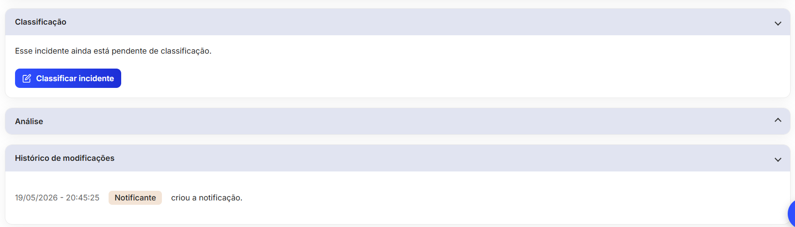
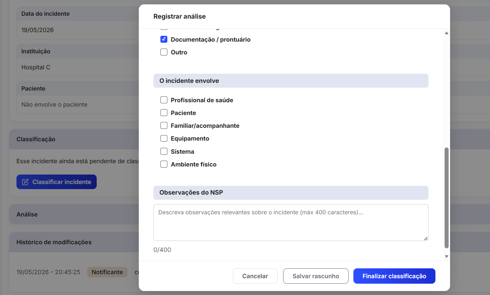
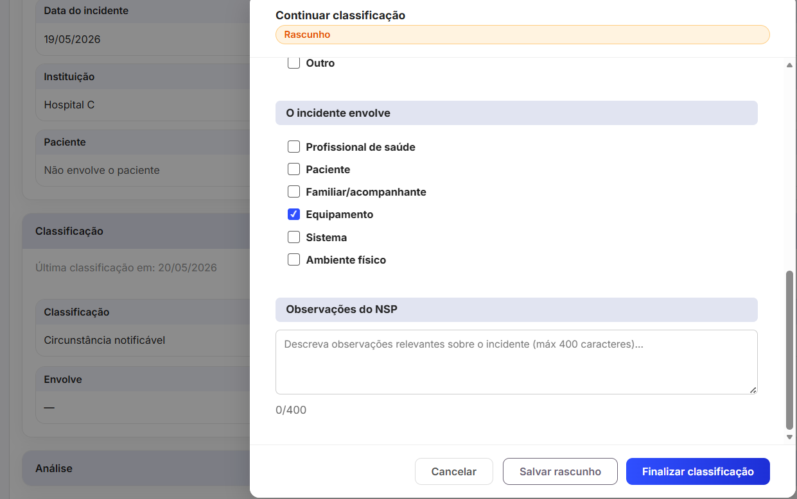
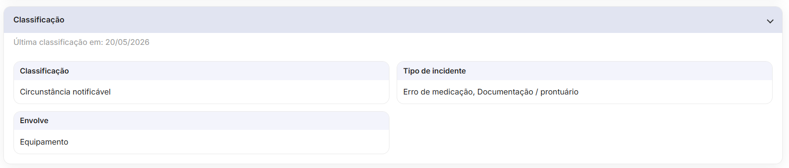
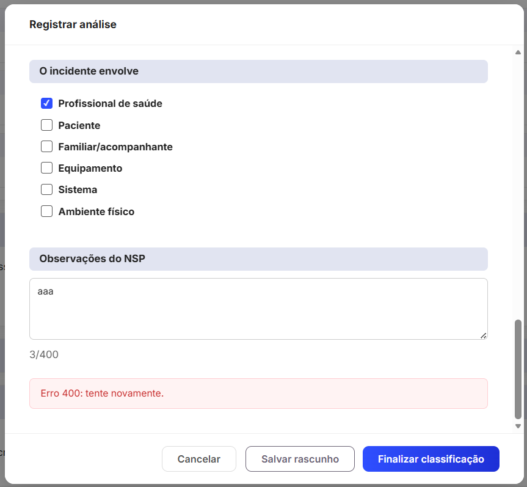
3.2 Back-end¶
| ID | Issue | Título | Severidade | Status | Responsáveis |
|---|---|---|---|---|---|
| BUG-BACK-001 | #9 | Main não está passando no type-check do typescript (defeitos nos testes unitários) | Alta | Fechado | Lucas Gonçalves → Fábio Ramos |
| BUG-BACK-002 | #15 | Erro 500 ao usar o GET nos campos ativos do formulário | Alta | Fechado | Luigi Almeida → Fábio Ramos |
| BUG-BACK-003 | #19 | Tornar entidade_relacional opcional (nullable) em CampoComOpcoes | Média | Fechado | Aline Hirokawa → Fábio Ramos |
| BUG-BACK-004 | #47 | Seed usa deleteMany+createMany em OpcaoCampo causando risco de violação de FK | Média | Fechado | Fábio Ramos → Fábio Ramos |
| BUG-BACK-005 | #48 | Substituir console.* por logger Pino em conformidade com ADR-0013 | Média | Fechado | Fábio Ramos → Fábio Ramos |
| BUG-BACK-006 | #52 | Validar complexidade de senha no schema de criação de usuário | Média | Fechado | Fábio Ramos → Fábio Ramos |
| BUG-BACK-007 | #63 | PUT /api/notificacoes/{id} Não atualiza o valor textual de "Outro" no campo sexo | Média | Fechado | Lucas Gonçalves → Lucas Gonçalves |
| BUG-BACK-008 | #97 | Corrige porta fixa no healthcheck do Dockerfile | Média | Fechado | Fábio Ramos → Fábio Ramos |
BUG-BACK-001 · #9 · Main não está passando no type-check do typescript (defeitos nos testes unitários)
Justificativa da severidade: Impede validação de tipos e pode bloquear pipelines de CI/CD.
Resumo
A branch main não está passando na verificação de tipos do TypeScript (npm run type-check) devido a erros nos testes unitários relacionados à ausência do atributo obrigatório entidade_relacional.
Passos para reprodução
- Executar o comando: npm run type-check
-
Observar erros de tipagem nos testes unitários dentro de:
-
opcao-campo.create.spec.ts
- opcao-campo.listByCampo.spec.ts
-
opcao-campo.update.spec.ts
-
Verificar que os mocks (makeCampo) não incluem a propriedade entidade_relacional.
Resultado esperado
- A verificação de tipos deve ser concluída com sucesso, sem erros, garantindo consistência entre as tipagens do Prisma e os objetos utilizados nos testes.
Observações
- O erro ocorre porque entidade_relacional é obrigatório na tipagem gerada pelo Prisma, mas não está sendo incluído nos objetos mockados nos testes.
- Há inconsistência entre a modelagem atual e os testes unitários.
- Possíveis soluções:
- Tornar entidade_relacional opcional (ou nullable) na tipagem/modelo.
- Ajustar os mocks (makeCampo) para incluir entidade_relacional.
Evidência
error TS2345: Property 'entidade_relacional' is missing in type '{ ... }' but required in type '{ ... entidade_relacional: EntidadeRelacional | null; ... }'.
Found 10 errors in 3 files.
BUG-BACK-002 · #15 · Erro 500 ao usar o GET nos campos ativos do formulário
Justificativa da severidade: Impede o carregamento dos campos do formulário, bloqueando funcionalidade essencial da aplicação.
Resumo
Erro 500 ao realizar requisição GET para listar campos ativos do formulário. O problema ocorre porque o Prisma está tentando acessar uma coluna inexistente no banco de dados.
Passos para reprodução
- Implementar no front-end a chamada GET utilizando axios para buscar os campos do formulário.
- Acessar a tela que consome o hook useCamposFormulario.ts.
- Observar falha ao carregar os dados.
- Verificar resposta da API retornando erro 500.
Resultado esperado
- A requisição GET deve retornar corretamente a lista de campos ativos do formulário, ordenados conforme a propriedade definida, sem erros no servidor.
Observações
- Conforme analisado, o reportante estava com a versão desatualizado do container e com isso gerou inconsistência.
Evidência
Não informado.
BUG-BACK-003 · #19 · Tornar entidade_relacional opcional (nullable) em CampoComOpcoes
Justificativa da severidade: Impacta execução de testes e modelagem correta de dados, mas possui workaround temporário.
Resumo
O atributo entidade_relacional na entidade CampoComOpcoes está sendo tratado como obrigatório, impedindo a execução de testes unitários quando seu valor é null. Isso afeta cenários válidos onde o campo não possui vínculo com entidade relacional (ex: SELECT com opções fixas).
Passos para reprodução
-
Executar os testes unitários:
-
campo-formulario.alterarStatus.spec.ts
- campo-formulario.criarCampo.spec.ts
-
campo-formulario.listar.spec.ts
-
Observar a falha ao instanciar ou manipular objetos onde entidade_relacional = null.
Resultado esperado
- O atributo entidade_relacional deve ser opcional e aceitar valores null, permitindo representar corretamente campos sem vínculo relacional e garantindo a execução dos testes sem erro.
Observações
- Existem tipos de campos (ex: SELECT com opções fixas) que não necessitam de entidade relacional.
- A tipagem atual não contempla esse cenário, gerando inconsistência entre regra de negócio e modelo.
Evidência
Não informado.
BUG-BACK-004 · #47 · Seed usa deleteMany+createMany em OpcaoCampo causando risco de violação de FK
Resumo
A seed atual deleta todas as OpcaoCampo de um campo e as recria com novos UUIDs (deleteMany + createMany). Isso apresenta dois riscos críticos:
- FK violation em runtime: se existirem RespostaCampo com valor_opcao_id referenciando as opções deletadas, a seed falha com erro de integridade referencial.
- Órfãos silenciosos: se o banco não enforcar a FK com RESTRICT, respostas históricas ficam com valor_opcao_id apontando para IDs inexistentes — corrompendo o histórico de notificações.
RespostaCampo.valor_opcao_id é FK para OpcaoCampo.id. O schema não define onDelete explícito (padrão Restrict no PostgreSQL). Logo, qualquer re-seed com dados reais existentes quebrará.
Passos para reprodução
Não informado.
Resultado esperado
- A seed não deleta OpcaoCampo que possuam RespostaCampo vinculadas
- Opções removidas ou renomeadas usam soft-delete (ativo = false) ou upsert idempotente por (campo_id, valor)
- Re-execução da seed em banco com respostas existentes não gera erro de FK nem corrompe histórico
- Respostas históricas continuam legíveis após re-seed (via label_original ou valor_opcao_id válido)
Observações
Trecho problemático em prisma/seed.ts (linha ~363):
- await prisma.opcaoCampo.deleteMany({ where: { campo_id: { in: [...] } } });
await prisma.opcaoCampo.createMany({ data: opcoes });
Alternativas a avaliar:
- Upsert por (campo_id, valor): preserva IDs existentes, não quebra FKs
- Adicionar ativo Boolean em OpcaoCampo: permite soft-delete sem remover registros
- Migration + seed separados: seed nunca deleta, apenas insere o que falta
Relacionado à alteração de nomes fictícios de hospitais: issue #46.
Evidência
Não informado.
BUG-BACK-005 · #48 · Substituir console.* por logger Pino em conformidade com ADR-0013
Resumo
O ADR-0013 determina que console.log, console.error, console.warn e console.info devem ser eliminados e substituídos pelo logger estruturado Pino em todos os serviços e repositórios. Foram identificadas 12 chamadas a console.* em 6 arquivos que violam essa decisão.
Logs via console.* saem como texto plano, não carregam Correlation ID, não são ingeridos por ferramentas de monitoramento (Grafana Loki, ELK) e não passam pelo pipeline de redact do Pino — risco de exposição de dados sensíveis em conflito com a LGPD.
Passos para reprodução
Não informado.
Resultado esperado
- src/server.ts (linha 9): console.log → logger.info
- src/shared/lib/redis.ts (linhas 24, 28, 32, 36, 40, 52): 6x console.* → logger.*
- src/middlewares/error.handler.ts (linha 89): console.error → logger.error
- src/middlewares/auth.middleware.ts (linha 36): console.error → logger.error
- src/shared/swagger/swagger.config.ts (linha 15): console.warn → logger.warn
- src/shared/swagger/swagger.setup.ts (linha 32): console.log → logger.info
- Nenhuma chamada console.* remanescente em src/ (exceto arquivos de teste)
- Logs críticos (error.handler, auth.middleware) passam pelo pipeline JSON com Correlation ID
Observações
- Referência: ADR-0013 — Adotar Logger Estruturado com Pino no Backend
- Logger compartilhado disponível em src/shared/utils/logger.ts — exporta logger, logEvent() e createChildLogger().
Evidência
Não informado.
BUG-BACK-006 · #52 · Validar complexidade de senha no schema de criação de usuário
Resumo
O schema Zod de criação de usuário (criarUsuarioSchema) valida apenas o comprimento mínimo da senha (8 caracteres), ignorando 4 das 5 regras exigidas pelo RNF 5.2.7. Senhas como password123 ou ABCDEFGH1 são aceitas indevidamente.
Além disso, não existem testes que cubram validação de complexidade de senha no módulo de usuário.
Passos para reprodução
Não informado.
Resultado esperado
- criarUsuarioSchema rejeita senha sem letra maiúscula
- criarUsuarioSchema rejeita senha sem letra minúscula
- criarUsuarioSchema rejeita senha sem número
- criarUsuarioSchema rejeita senha sem caractere especial
- criarUsuarioSchema rejeita senha com menos de 8 caracteres
- criarUsuarioSchema aceita senha que atende todos os 5 critérios
- Testes unitários cobrem cada regra de complexidade individualmente
Observações
- Arquivo: src/modules/usuario/usuario.schemas.ts (linha 9)
- Testes: tests/unit/modules/usuario/usuario.criar.spec.ts (sem cobertura de schema)
- RNF 5.2.7: 8 chars + número + maiúscula + minúscula + caractere especial
Evidência
Não informado.
BUG-BACK-007 · #63 · PUT /api/notificacoes/{id} Não atualiza o valor textual de "Outro" no campo sexo
Resumo
Não informado.
Passos para reprodução
Não informado.
Resultado esperado
- Ao enviar requisição de alteração do campo de "Sexo" que já possua o valor "Outro" com o texto "SXO" para o valor "Outro" com o texto "SXOrrr" então o valor de texto é atualizado de "SXO" para "SXOrrr"
Observações
Não informado.
Evidência
curl 'http://localhost:26141/api/notificacoes/2e0cc734-0099-4ca9-b95d-1662a592e43b' \
-X 'PUT' \
-H 'Accept: */*' \
-H 'Authorization: Bearer {access_token}' \
-H 'Content-Type: application/json' \
--data-raw '{"data_incidente":"2026-05-18T00:00:00.000Z","unidade_id":"11111111-1111-4111-a111-111111111112","setor_id":"aba69c48-6a52-4682-ae1e-53e6f367d06c","respostas":[{"campo_id":"55555555-5555-4555-b555-000000000009","valor_opcao_id":"66666666-6666-4666-b666-000000000018"},{"campo_id":"55555555-5555-4555-b555-000000000001","valor_opcao_id":"66666666-6666-4666-b666-000000000006"},{"campo_id":"55555555-5555-4555-b555-000000000002","valor_opcao_id":"66666666-6666-4666-b666-000000000015","valor":"SXOrrr"},{"campo_id":"55555555-5555-4555-b555-000000000003","valor":"MSTR"}]}'
Payload
{
"data_incidente": "2026-05-18T00:00:00.000Z",
"unidade_id": "11111111-1111-4111-a111-111111111112",
"setor_id": "aba69c48-6a52-4682-ae1e-53e6f367d06c",
"respostas": [
{
"campo_id": "55555555-5555-4555-b555-000000000009",
"valor_opcao_id": "66666666-6666-4666-b666-000000000018"
},
{
"campo_id": "55555555-5555-4555-b555-000000000001",
"valor_opcao_id": "66666666-6666-4666-b666-000000000006"
},
{
"campo_id": "55555555-5555-4555-b555-000000000002",
"valor_opcao_id": "66666666-6666-4666-b666-000000000015",
"valor": "SXOrrr"
},
{
"campo_id": "55555555-5555-4555-b555-000000000003",
"valor": "MSTR"
}
]
}
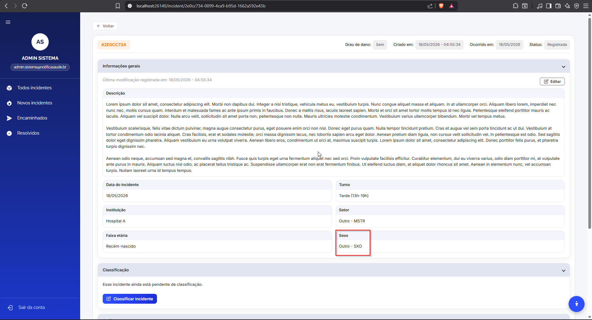
BUG-BACK-008 · #97 · Corrige porta fixa no healthcheck do Dockerfile
Resumo
O HEALTHCHECK do Dockerfile (stage api) usa a porta 3000 fixa, mas a API escuta na porta definida por process.env.PORT (no deploy, 3001 via BACKEND_INTERNAL_PORT). Resultado: o healthcheck bate em localhost:3000, recebe connection refused e marca o container como unhealthy mesmo com a API funcionando normalmente.
Passos para reprodução
Não informado.
Resultado esperado
HEALTHCHECK usa process.env.PORT com fallback para 3000
Container backend fica healthy quando PORT != 3000 (ex: 3001)
Sem regressão quando PORT não está definida (default 3000)
Observações
Alteração já validada localmente no stack de deploy:
CMD node -e "fetch(http://localhost:+(process.env.PORT||3000)+/health).then(r=>process.exit(r.ok?0:1)).catch(()=>process.exit(1))"
Relacionado à issue de observabilidade no repo notifica-saude-deploy.
Evidência
Não informado.
3.3 End-to-End¶
| ID | Issue | Título | Severidade | Status | Responsáveis |
|---|---|---|---|---|---|
| BUG-E2E-001 | #5 | Mensagem de rate limit não é exibida após múltiplas tentativas de login inválidas | Média | Fechado | Pedro Silva Soledade → Lucas Gonçalves, Fábio Ramos |
BUG-E2E-001 · #5 · Mensagem de rate limit não é exibida após múltiplas tentativas de login inválidas
Justificativa da severidade: Pode impactar negativamente a proteção contra ataques de força bruta e comprometer a experiência do usuário.
Resumo
Após múltiplas tentativas de login inválidas, o sistema não exibe a mensagem de rate limit esperada. Em vez disso, continua retornando a mensagem padrão de credenciais inválidas.
Passos para reprodução
- Acessar a tela de login
- Inserir e-mail inválido: `usuario@invalido.com`
- Inserir senha inválida: `senhaerrada`
- Clicar em "Entrar"
- Repetir o processo múltiplas vezes (≥ 5 tentativas consecutivas)
- Observar a mensagem exibida
Resultado esperado
- Sistema deve exibir mensagem de rate limit:
- "Muitas tentativas. Tente novamente em 1 minutos."
Resultado obtido
- Sistema exibe repetidamente a mensagem:
- "⚠ E-mail ou senha incorretos. Verifique os dados e tente novamente."
Observações
- O erro foi identificado durante execução automatizada com Playwright
- O alerta está sendo localizado corretamente (`getByRole('alert')`), porém o conteúdo não muda
- Possível ausência ou falha na implementação da regra de rate limit no backend
- Pode também indicar delay maior que o esperado para ativação do bloqueio
Versões Afetadas
- Ambiente: CI (GitHub Actions)
- Navegador: Chromium
Evidência
Não informado.
4. Como registrar um novo bug¶
Um bug por bloco
Adicione o bug na seção da camada em que ocorreu (Front-end, Back-end ou End-to-End), com o próximo ID da sequência daquela camada (por exemplo, BUG-FRONT-019, BUG-BACK-009, BUG-E2E-002). Inclua uma linha na tabela-resumo da seção, crie o bloco com o relato completo e registre a alteração no histórico.
| Campo | Como preencher |
|---|---|
| ID | Identificador sequencial por camada: BUG-FRONT-NNN, BUG-BACK-NNN ou BUG-E2E-NNN. |
| Issue | Número da issue no GitHub, no formato #N. |
| Título | Descrição curta e autoexplicativa do defeito. Se estiver associado a algum caso de teste, mencione o identificador (ex.: CT-FUN-001). |
| Status | Situação atual do bug (ex.: Aberto, Em correção, Fechado). |
| Reportado por / Designado para | Quem encontrou o defeito e quem é responsável pela correção. |
| Resumo | Descrição do problema observado. |
| Passos para reprodução | Lista numerada com os passos necessários para reproduzir o defeito. |
| Resultado esperado / obtido | Comportamento correto esperado e comportamento observado. |
| Observações | Hipóteses de causa, arquivos afetados, relação com outras issues. |
| Severidade | Alta, Média ou Baixa, conforme os critérios da seção 2, com uma justificativa curta. |
| Versões afetadas | Ambiente e navegador em que o defeito ocorre, quando relevante. |
| Evidência | Capturas de tela, requisições (curl) ou logs que comprovem o defeito. |